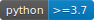
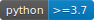

Welcome to itea’s documentation!
 
itea is a python implementation of the Interaction-Transformation Evolutionary Algorithm described in the paper “Franca, F., & Aldeia, G. (2020). Interaction-Transformation Evolutionary Algorithm for Symbolic Regression. Evolutionary Computation, 1-25.”
The Interaction-Transformation (IT) representation is a step towards obtaining simpler and more interpretable results, searching in the mathematical equations space by means of an evolutionary strategy.
Together with ITEA for Classification and Regression, we provide a model-specific explainer based on the Partial Effects to help users get a better understanding of the resulting expressions.
This implementation is based on scikit-learn package and the implementations of the estimators follows their guidelines.
Getting started:
ITEA package documentation: